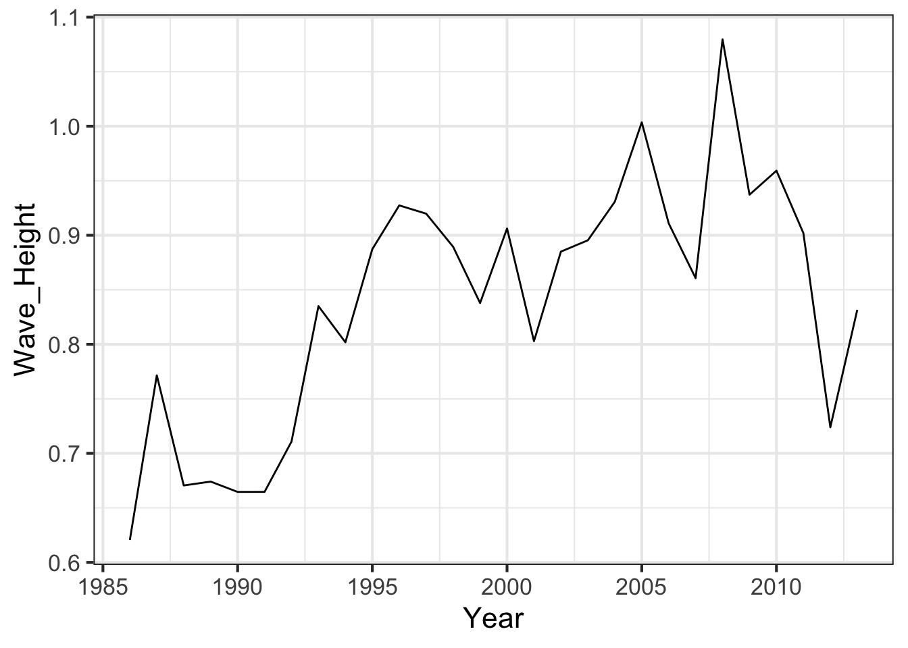
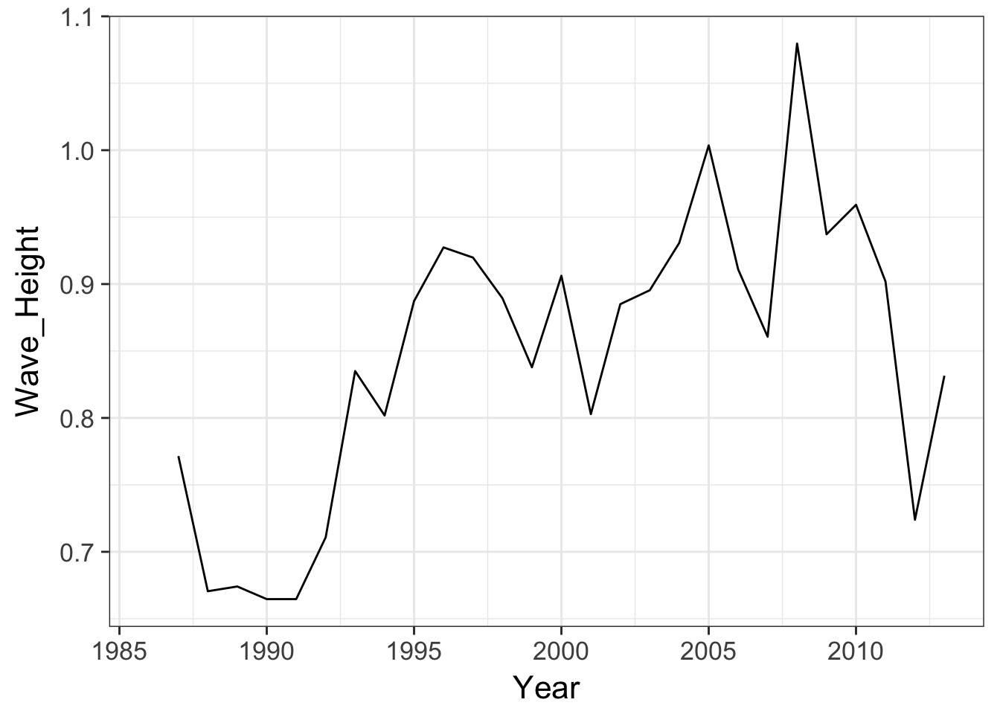

Iteration
We’ve done good!
Our wrapper
Our Reading Function
read_buoy <- function(a_year, buoy_number = 44013,
buoy_dir = "./data/buoydata/"){
#make a file name
buoy_file <- str_c(buoy_dir, buoy_number, "_", a_year, ".csv")
#read in the file
one_buoy <- read_csv(buoy_file,
na = c("99", "999",
"99.00", "9999.00",
"99.0", "9999.0",
"999.0"))
#return the file
return(one_buoy)
}Our Formatting Function
With lots of subfunctions
#bad names
fix_year_names <- function(a_buoy_df){
names(a_buoy_df) <- names(a_buoy_df) %>%
str_replace("^YY$", "YYYY") %>%
str_replace("X\\.YY", "YYYY")
return(a_buoy_df)
}Our monthly summarize
make_monthly_buoy <- function(a_buoy_df){
buoydata <- a_buoy_df %>%
select(YYYY, MM, WVHT, WTMP) %>%
rename(Year = YYYY,
Month = MM,
Wave_Height = WVHT,
Temperature_c = WTMP) %>%
group_by(Year, Month) %>%
summarise(Wave_Height = mean(Wave_Height, na.rm=T),
Temperature_c = mean(Temperature_c, na.rm=T)) %>%
ungroup()
return(buoydata)
}Reading in a file of functions
Often, we want to have a file with just all of our functions, so we don’t junk up our working file. This eventually extends to writing packages, but, that’s another class…
This works great for one year!
# A tibble: 7 x 4
Year Month Wave_Height Temperature_c
<dbl> <dbl> <dbl> <dbl>
1 2012 6.00 0.520 18.2
2 2012 7.00 0.407 20.1
3 2012 8.00 0.393 20.4
4 2012 9.00 0.768 16.4
5 2012 10.0 0.890 13.7
6 2012 11.0 1.17 10.7
7 2012 12.0 1.23 8.74But we want…

You can load one year, but…

How do we get to there from here?
One solution:
NO!
Isn’t this what computers/robots are all about?

The old school way
The Map Paradigm


Map functions
Take a list or vector as input
Apply a function to each elment of the list/vector
Return the corresponding object, bound together into a prespecified type
Median Example
Median Example
$a
[1] -0.1427377
$b
[1] 0.1147585
$c
[1] -0.04557728
$d
[1] -0.1944985The Map Paradigm
What if I don’t want a list

The world of maps
map()makes a list.map_df()makes a tibble/data frame.map_lgl()makes a logical vector.map_int()makes an integer vector.map_dbl()makes a double vector.map_chr()makes a character vector.
More medians
a b c d
-0.14273773 0.11475855 -0.04557728 -0.19449852 a b c d
"-0.142738" "0.114759" "-0.045577" "-0.194499" # A tibble: 1 x 4
a b c d
<dbl> <dbl> <dbl> <dbl>
1 -0.143 0.115 -0.0456 -0.194What if I have more than one argument?
a b c d
-0.14273773 0.11475855 -0.04557728 -0.19449852 What if I have more than one argument?
a b c d
-0.14273773 0.11475855 -0.04557728 -0.19449852 You try!
What does
map(-2:2, rnorm, n = 5)do? How is it different frommap_dbl(-2:2, rnorm, n = 5)?Get the mean of each column of
dfCompute the number of unique values in each column of
iris(hint, you’ll need length and unique)!
Now, what about our data problem?
We have a lot of years
These years can be put into a vector - 1986:2013, so….
Your turn again!
Make one big tibble using
map_df(), a vector of years, andget_buoyGet the annual mean of wave height
Plot
One Line to rule them all
# A tibble: 331 x 4
Year Month Wave_Height Temperature_c
<dbl> <dbl> <dbl> <dbl>
1 1986 1.00 NA 3.62
2 1986 2.00 NA 2.68
3 1986 3.00 NA 3.04
4 1986 4.00 NA 6.42
5 1986 5.00 NA 10.5
6 1986 6.00 NA 13.7
7 1986 7.00 NA 17.1
8 1986 8.00 NA 18.1
9 1986 9.00 NA 14.9
10 1986 10.0 NA 12.8
# ... with 321 more rowsA Standard Workflow
Our Plot
